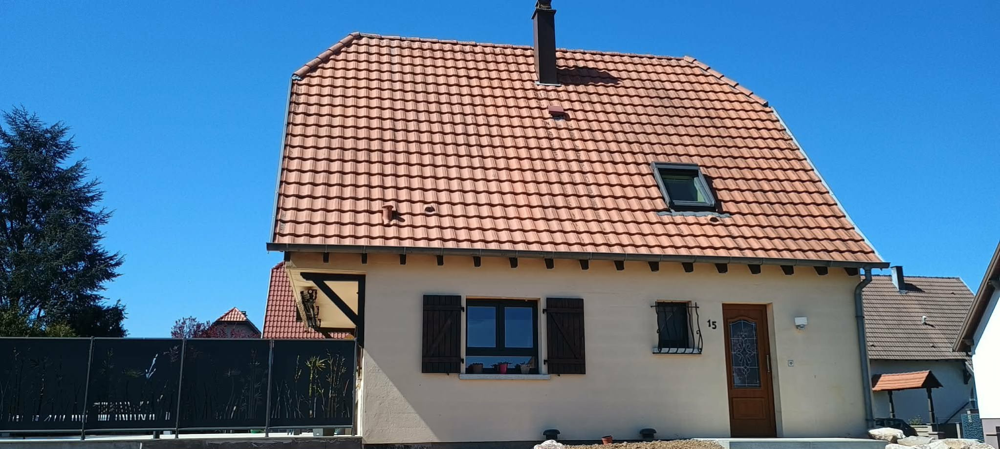
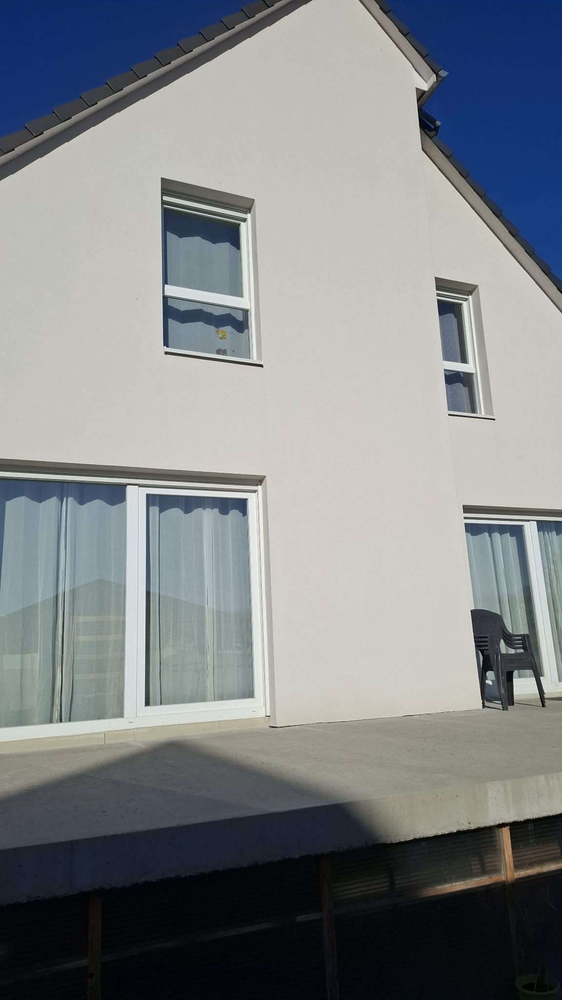
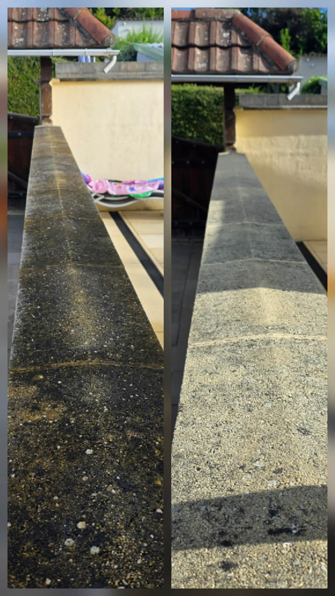
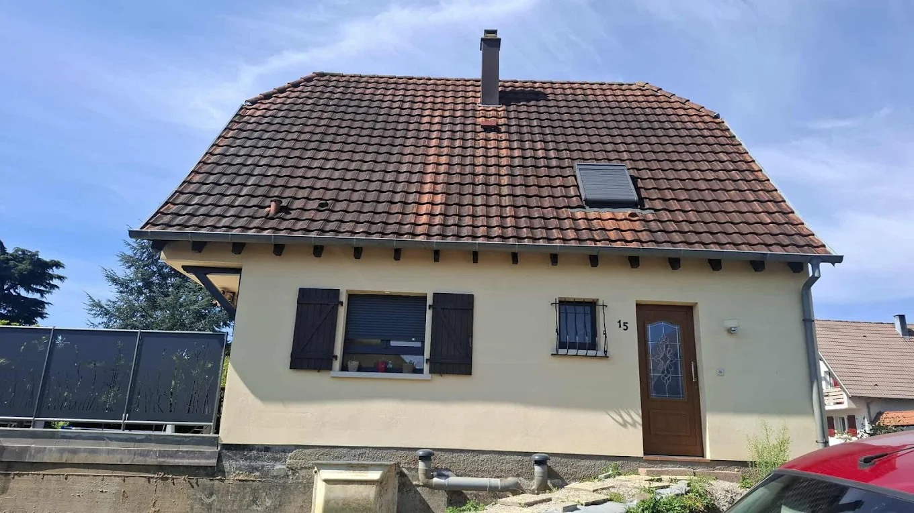

Nos prestations
Nettoyage et traitement durable de vos surfaces
Toiture, façade, terrasse, panneaux solaires. PulveryClean Alsace traite chaque surface avec un matériel professionnel et des produits sans chlore ni javel. Le tout à partir de 5 €/m², avec un devis gratuit et détaillé.

Nettoyage et démoussage de toiture
Mousses, lichens et noircissures retiennent l'humidité et abîment vos tuiles saison après saison. Nous éliminons ces dépôts, puis appliquons un traitement anti-mousse et, si besoin, un hydrofuge de protection qui limite leur retour.
Résultat, une toiture saine, qui respire et qui dure plus longtemps. Nous travaillons avec précaution pour préserver vos tuiles et l'étanchéité de votre couverture.
- Démoussage complet et rinçage maîtrisé
- Traitement anti-mousse préventif
- Hydrofuge de protection en option

Nettoyage de façade
Le temps, l'humidité et la pollution déposent algues vertes, traces noires et salissures sur vos murs. Notre nettoyage redonne à la façade sa teinte d'origine sans agresser l'enduit ni la peinture.
Nous adaptons la pression et les produits à chaque support, crépi, enduit, pierre ou bardage. Un traitement protecteur peut être appliqué pour espacer durablement les nettoyages.
- Suppression des algues et traces de pollution
- Méthode adaptée à chaque type de support
- Protection des abords et plantations

Nettoyage de terrasse
Dalles, pavés autobloquants, béton désactivé ou lames de bois. Nous redonnons vie à vos extérieurs encrassés par les mousses et le vert d'eau, sans chlore ni javel pour préserver les joints, le mobilier et vos végétaux.
Vos espaces de vie extérieurs retrouvent une surface propre et sûre, moins glissante, prête à profiter des beaux jours.
- Nettoyage en profondeur sans chlore ni javel
- Adapté au bois, béton, pierre et carrelage
- Surfaces moins glissantes et plus saines

Nettoyage de panneaux solaires
Poussières, pollens, fientes et dépôts calcaires réduisent le rendement de vos panneaux photovoltaïques. Un nettoyage doux et régulier restaure leur production et protège votre investissement.
Nous utilisons une eau adaptée et un matériel sans rayure, dans le respect des recommandations des fabricants. Des panneaux propres, c'est de l'énergie en plus.
- Nettoyage doux, sans rayure ni produit agressif
- Meilleur rendement de votre installation
- Intervention en toute sécurité
Notre méthode
Simple, clair, sans mauvaise surprise
Du premier appel à la fin du chantier, vous savez exactement ce qui est prévu et ce que vous payez.
- 1
Premier contact
Vous nous décrivez votre projet par téléphone ou via le formulaire. Nous évaluons rapidement vos besoins.
- 2
Visite et devis
Nous mesurons les surfaces et vous remettons un devis gratuit, clair et détaillé, à partir de 5 €/m².
- 3
Intervention
Nous protégeons vos abords, puis réalisons le nettoyage avec un matériel adapté et des produits sans chlore ni javel.
- 4
Résultat durable
Vous profitez d'une surface nette et protégée. Un traitement préventif peut prolonger l'effet dans le temps.
Un projet de nettoyage en tête ?
Parlons-en. Le devis est gratuit et sans engagement.